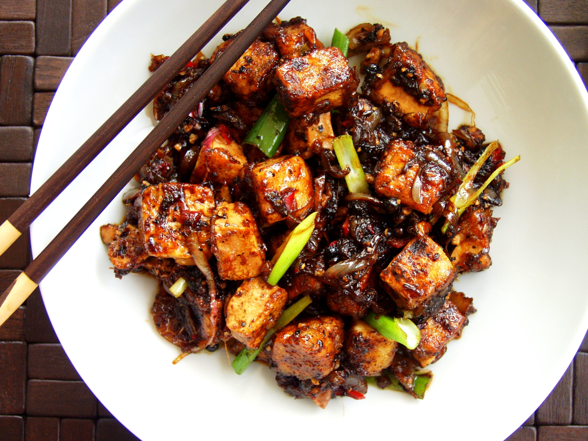

Black Pepper Tofu

Description
Tofu dishes are a staple of chinese cuisine. This version is a spicy, vegan black pepper tofu that really
packes a punch, while being full of flavor!
Ingredients
- 300g firm tofu, pressed
- 3 tbsp coconut oil
- 1.5 tbsp cornflour/cornstarch
- 3 garlic cloves, minced
- 1/2 thumb ginger, minced
- 2 tbsp light soy sauce
- 1 tbsp dark soy sauce
- 3 tbsp maple syrup
- 3 tsp black peppercorns
- 3 spring onions, chopped
- 1/2 red chili, chopped
Steps
- Slice tofu into cubes and transfer into bowl
- Cover with cornflour and mix until tofu is coated
- Add 1 tbsp coconut oil to non-stick pan on medium heat
- Once oil is hot, add tofu and fry until golden brown (can take 10-15 minutes)
- Transfer tofu to plate once it is fried
- Heat the pan up again and add remaining 2 tbsp coconut oil
- Once oil is hot, add garlic and ginger, and cook until they start browning
- Add the light soy sauce, dark soy sauce, and maple syrup
- Grind peppercorns and add them to the sauce
- Cook this sauce until it thickens, but do not let it get burnt or caramelized
- Add tofu, spring onions, and red chili
- Stir so that tofu is covered in sauce
- Serve with rice and enjoy!